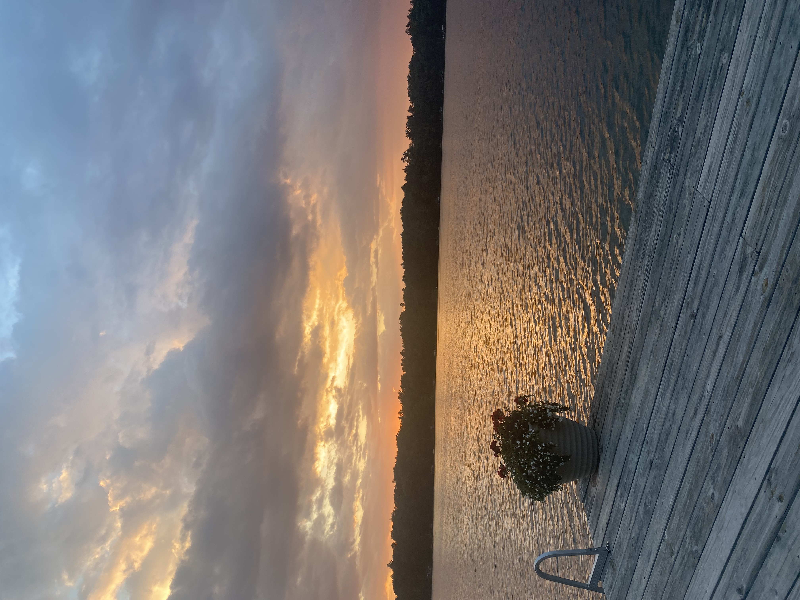
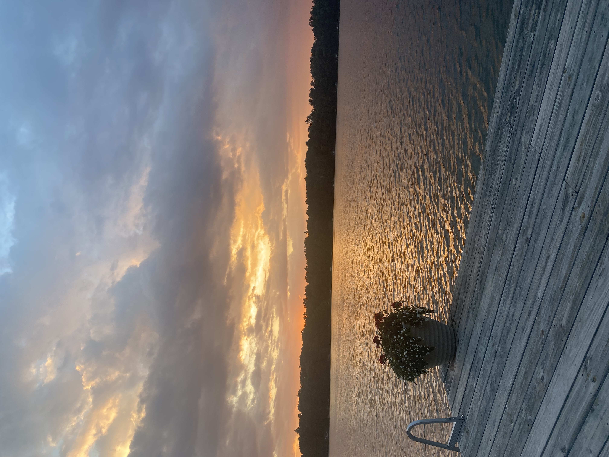
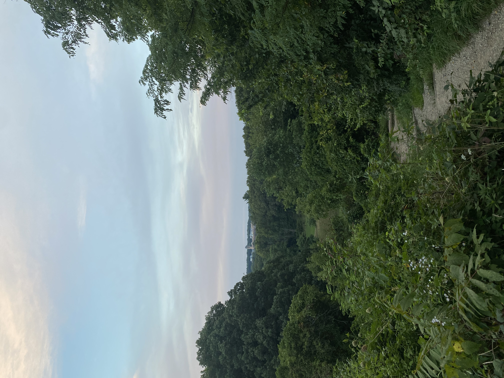
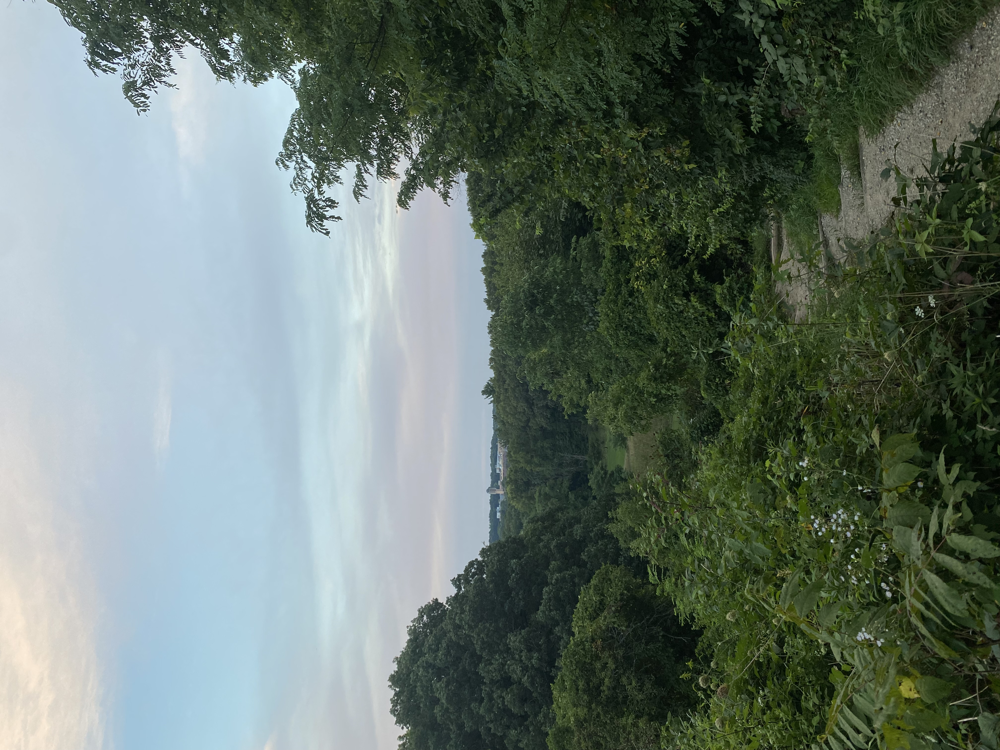

About Me Page
Chicago
I was born and raised in Chicago Illinois. I went to Lincoln Elementary, 615 W Kemper Pl, for grade school and went to Walter Payton College Prep, 1034 N Wells, for high school. I have a great apreciation for the city and it was one of my favorite places. I really enjoy shopping at the Lincoln Park Farmer's Market, driving along Lake Shore Drive, and watching concerts in Solider Feild.


Samba
When I was 11 I got my dog. When we first met him his name was Eddie. However, we thought the name Samba was better. He is really docile and loves to sleep. He is really small and weighs only 16lbs. I love him so much and could not imagine my family without him.


Eagle River
When I was about 8 or 9 I went to sleep away camp for the first time. I started by only going for a week. However, I enjoyed it so much I kept going for more and more time every summer. At camp I did many fun activities and learned a lot of new skills. I learned how to make jewelry, archery, tennis, and many other things. My favorite activity was waterskiing. I also met many amazing friends during my summers there. I will always cherish those memories.

 


Ann Arbor
Now that I go to the University of Michigan I spend most of my time in Ann Arbor. I really enjoy everything Ann Arbor has to offer. There are so many different people here and so much to do. Some of my favorite places near campus are the Arboretum, Revive, and Joe's pizza.
 

Florida
My parents are now moving to Florida. Florida is really different than the midwest. It has really great weather and beautiful nature. I enjoy sitting out in the sun, boating, and swimming in the ocean.